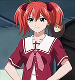

De: La Frikipedia, la enciclopedia extremadamente seria.
De: La Frikipedia, la enciclopedia extremadamente seria. De: La Frikipedia, la enciclopedia extremadamente seria.
| De la serie anime para todos: | |||
| Rosario + Vampire | |||
| |||
| Género: | Hostias, hadrcore, Peleas, Patriarcado, y más Hostias. | ||
| Episodios: | 13+12+1 de relleno. | ||
| Autor del manga: | Freddy Kruger | ||
| Publicación: | El otro día. | ||
| Publicado en: | PlayVamp. | ||
| Director del anime: | Alucard | ||
| Transmitido en: | Déjame pensar... ah, Japón. | ||
| Ovas: | No sé (pero esas risas de fondo creo que lo aclaran todo). | ||
| Películas: | Aplícate lo mismo que en la anterior. | ||
| Notas | Intenta tener muchos amigos monstruos, así podrás asustar a tus padres para sacarles más pasta. | ||
«No sé lo que me han dicho; el coño de una esquimal es muy frío»
~ Pip Bernandotte jodiendo lanzando piropos a Mizore Shirayuki
«Moka-san...»
~ Tsukune cada vez que mira a Moka.
«Perdona, pero me he despertado tarde y no he desayunado.»
~ Moka antes de morder el pene a Tsukune.
«Mira quien fue a hablar de tetas, la que es más plana que una tabla.»
~ Kurumu iniciando una civilizada discusión con Yukari.
«¡Cuando seas vieja se te caerán las tetas~desu!»
~ Yukari finalizando una civilizada discusión con Kurumu.
«¿Quieres un helado?»
~ Mizore sobre su papel en la serie.
«Han pasado muchas cosas desde entonces...»
~ Ruby cada vez que entabla una conversación.
«Quiero conocer muchas monstruos...»
~ Cualquiera al ver la serie.
«Vaya que ésta será una noche realmente maravillosa»
~ Alucard manifestando su gusto antes de que se follara a las guarras.
¿Alguna vez te has preguntado si el coco sabe sumar y restar? ¿Dónde aprendió a hacer lo suyo el hombre del saco? ¿Los orcos aprenden gramática? ¿Los hombres lobo pueden hallar el coseno y la tangente de una curva cuya pendiente sea 0,2? Pues estás de suerte, amigo. Porque para tí, y solo para tí, te daré una bofetada y para casa un paseíto por la prestigiosa Academia Youkai, academia donde han estudiado prestigiosos monstruos como Dracula, El hombre invisible, Medusa o Manuel Fraga. Esta academia cuenta con numerosos clubes de actividades extraescolares tales como club de natación, periódico, fotografía y el club de las pervertidas. Pero no hay que preocuparse porque sean monstruos, los profesores mantienen a raya a esta pandilla de engendros bichos raros con múltiples violaciones, rapapolvos y somantas de leshes ejercicios que harían que un mono sufriera un esguince mental.
Esta serie tiene dos principales temporadas, las cuales son:
Los alumnos más destacables de este manicomio esta academia son:
| Afotaco del personajo | Descrición | Clase de monstruo que es |
|---|---|---|
 Aono Tsukune |
Un chavalín que consigue ir a la academia Youkai gracias a que su padre "encuentra" una carta de recomendación una noche de borrachera (verídico). El chaval conoce a Moka cuando ella lo atropella con su bici, pero aunque pareciera que le partió el espinazo, el tipo como si nada. Es un pringadillo del cual siempre abusan de cualquier manera. Sufre el síndrome de Keitaro Urashima. | Ghoul, Nosferatu, Shinzo. Nota: Es el niñato de Valencia. |
| Akashiya Moka |
Es la primera que conoce Tsukune en la serie. Básicamente entre ellos se da una especie de trato por el cual él se deja chupar Si olvidaba algo, su apellido es parónimo de la palabra Akasha que significa éter según en el hinduísmo, a la vez que en el la cultura egipcia era la Reina Madre de los vampiros (Si crees que el pentagrama de Alucard que tiene en los guantes no significa |
Nosferatu (por eso aprovecha a Tsukune para desyunar, cenar, comer, merendar, tomar un té de media tarde...). |
| Kurumu Kurono |
Una chavala, que podría ser pariente de Kei Kurono, que aparece en el segundo episodio y que no duda en encadilar a Tsukune con sus encantos para que deje a Moka. Después resulta que la chavala puede hipnotizar con sus |
|
| Yukari Sendo |
Es la típica loli que aparece cuando hay un imbécil rondando. Al principio solo quería |
Bruja (aunque un poco inútil, porque sus conjuros solo pueden lanzar palanganas sobre la gente) |
| Mizore Shiraiyuki |
Una chica que desde que llega va detrás de Tuskune porque |
Mujer del hielo. |
| Ginei Morioka |
A este no hay que darle mucha importancia, dado que aparece tres o cuatro veces para "solucionar" algun problemilla. Es el personaje calenturiento de la serie, admirador del Voyerismo afín a las dotadas estudiantes de la academia. En un principio era un Voyer al que nadie pillaba y que intentaba |
Hombre Lobo. |
Los mejores docentes con los que cuenta Arkham Asylum esta academia son:
| Afotaco del personajo | Descrición | Clase de monstruo que es |
|---|---|---|
| Shizuka Nekonome |
Es la principal profesora de la serie, y la única que no arma ningún embolado por culpa de los alumnos. Es la jefa del club de periodismo, es |
Mujer-gato (shröndinger, porque no está ni viva ni muerta). |
| Ririko Kagome |
Se cree que es pariente de Kagome, de Inuyasha, solo que Ririko es extremadamente puta y lo unico en comun es el nombre. Es la profesora de matemáticas, pero sus lecciones son difíciles porque no solo se viste como una zorra, ES UNA ZORRA, ademas que los conceptos son complicados. Tsukune no puede aprobar su asignatura dado que mira hacia otras cosas en vez de a la pizarra, por lo que ella le da clases de refuerzo, en las cuales |
Lamia (¿Que no sabes lo que es? Pues es una pava con la mitad de abajo de serpiente) |
| Hitomi Ishigami |
Aparece solo en el manga. Esta era la profesora de arte, pero la tipa al ver que no conseguía |
Medusa. |
| Apusara |
Solo en el Anime. Esta es la profesora de cocina, la cual está obsesionada con el curry hasta el punto de |
Genio. |
Otros personajes que aparecen el el manicomio la escuela son:
| Afotaco del personajo | Descrición | Clase de monstruo que es |
|---|---|---|
| Ruby Tojo |
La tipa quería evitar que unos tipos recalificaran el terreno donde ella vivía para hacer chalets, pero cuando vió a Yukari se animó para que la ayudara, pero Yukari quería |
Bruja. |
|  Shuzen Kokoa |
Es la hermana pequeña de Moka, la cual solo va a la academia Youkai para |
Vampiro (Nota:: Se parece en personalidad a Seras Victoria en el gusto por |
 Ko-chan |
Al principio todos podían pensar que este prototipo de Wombat con alas solo era un narrador, pero cuando Kokoa aparece, el bicho resulta ser su mascota y además puede transformarse en cualquier tipo de arma |
Murciélago transformable. |
| Tsurara Shiraiyuki |
La madre de Mizore. Es una copia de Mizore, pero en kimono. Está obsesionada con que Mizore se |
Mujer del hielo. |
| Ageha Kurono |
Exactamente igual que la anterior. | Súcubo. |
| Hombre de las nieves |
El padre de Mizore se disfraza de Yeti para satisfacer los extraños deseos de su esposa. Es el único calmado de la serie. Se cree que huyo a los confines del mundo frío al caer el gobierno de Hitler | Hombre de las nieves (yeti mestizo nazi) |
| Conductor del autobús |
Es el conductor del autobús que lleva a Tsukune a casita, pero el tipo es tan vago que solo pasa una vez al mes hasta que arreglan un convenio laboral monstruil y hacen que pase cada semana. Se rumora entre los compañeros del proletariado que obtuvo su licencia de conducir en el Twisted metal 4. | Ni puta idea. |
| Papi |
El padre de Moka y Kokoa. El tipo tiene una copia en plástico del rosario de Moka y Tuskune va a buscarlo porque la Moka verdadera no |
Vampiro. |
| Director de la escuela |
Pasamos de este porque no pinta nada. Sin embargo... ¿Os parece haberlo visto en otro lugar? | Ni puta idea. |
Autor(es):